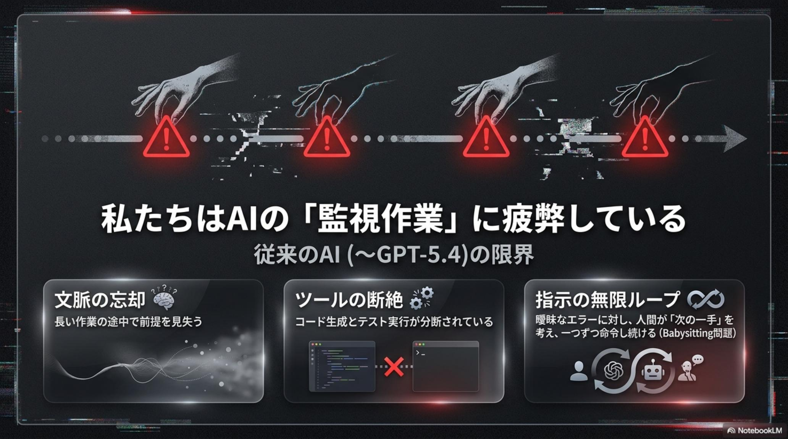
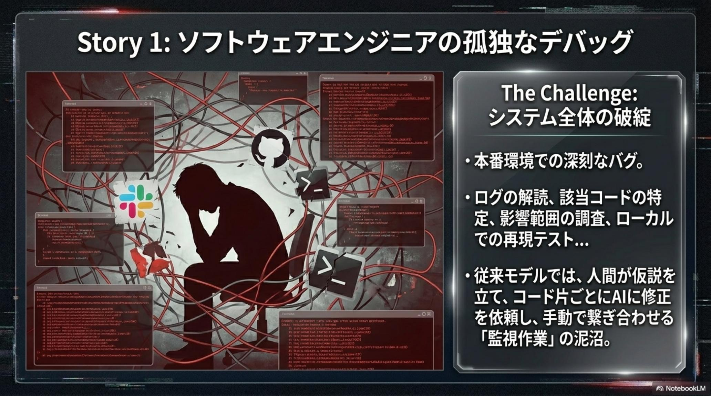
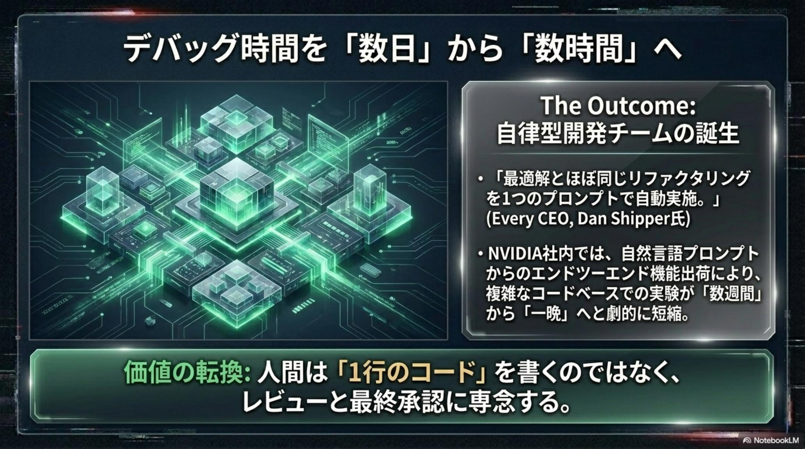
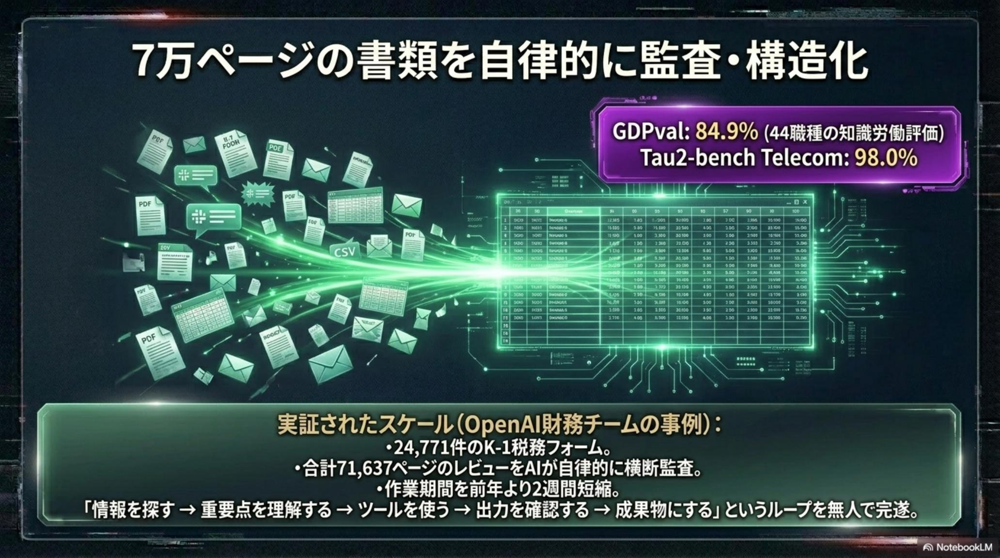
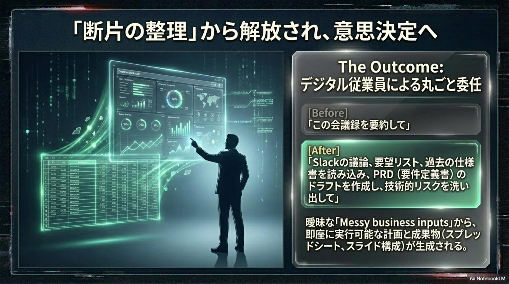
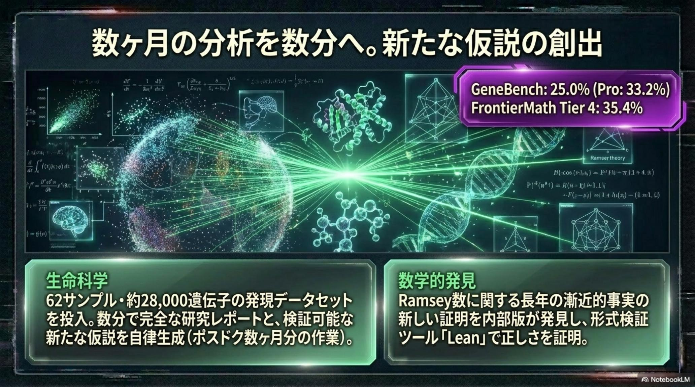
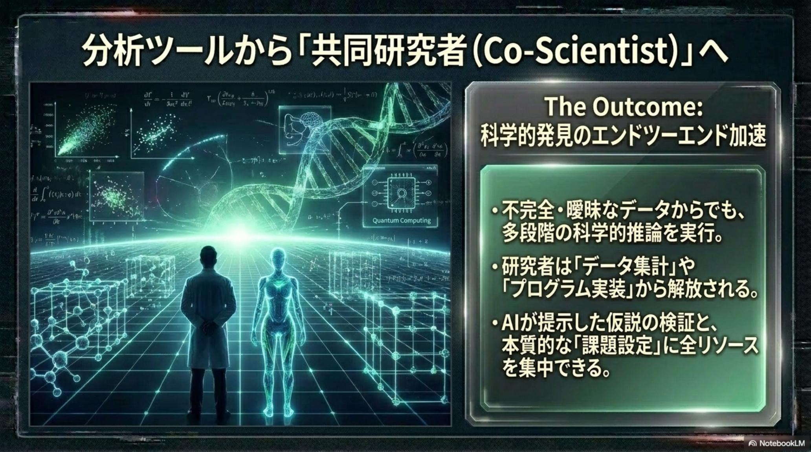
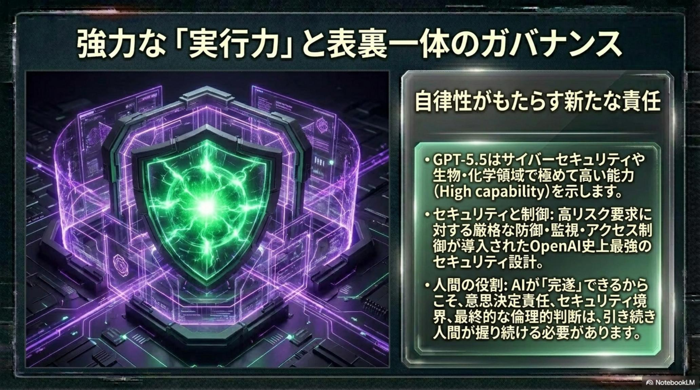
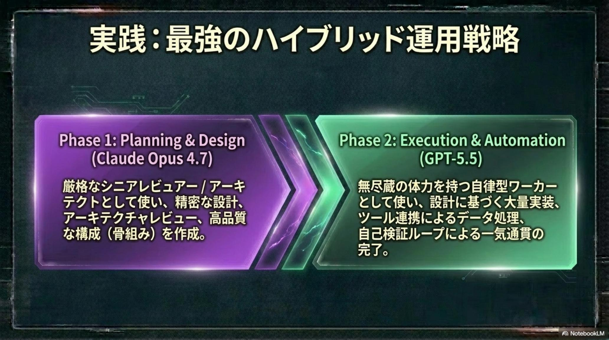

GPT-5.5
The Autonomous Colleague · 2026-04-23 発表
「指示待ちAI」から、
自立する同僚へ。
GPT-5.4 と同等の応答速度を維持しつつ、目的だけで最後までやり遂げる。
監視（babysitting）はもう要らない。
2026-04-23、OpenAI は GPT-5.5 を発表した。これまでの LLM は便利な道具だが、一行ずつ指示しないと途中で止まる「指示待ち」の存在だった。GPT-5.5 は、目的を渡すだけで自ら計画を立て → ツールを使い → テストし → 自己検証して修正し、最後まで仕事を完遂する「自立したエージェント（デジタル同僚）」へ進化した。本号では、エンジニア・知識労働者・研究者の 3 名が抱えていた根深い課題が、GPT-5.5 によってどう変わったのか——3 つの実話ストーリーで紐解く。そこから浮かび上がるのは、「How（どうやるか）」から「What（何を達成したいか）」へという、私たち自身の働き方の静かな革命だ。

なぜ AI は「途中で止まる」のか——3 つの人の叫び
2026 年春までの LLM は、驚くほど賢いが「監督なしでは最後までたどり着けない」という根深い限界を抱えていた。エンジニア、プロダクトマネージャーや財務担当、研究者——役割の異なる 3 名が、毎日同じ感覚を共有していた。「AI は途中までしか一緒に走ってくれない」。

便利な「道具」だが、止まる
- エンジニアは一行ずつ指示し、コードを手で繋ぎ、テスト地獄に沈む
- PM／財務は Slack・議事録・数万ページの契約書を手で構造化
- 研究者はデータ解析・仮説・文献調査の反復に数ヶ月〜数年
- AI の出力を「確認して貼り直す」作業が本業を圧迫
- 人間は「何を達成したいか」より「どう指示するか」に忙殺
目的を渡すだけでやり遂げる同僚
- 「この壊れた状態を直せ」——と一言で自律デバッグ開始
- 24,771 件 / 71,637 ページの税務書類を自律監査
- 62 サンプル × 28,000 遺伝子を数分で解析 + 仮説提案
- 自ら計画 → 実行 → 検証 → 修正を多段階ループ
- 人間は「What／Why」の意思決定だけに集中できる
リリース直後、本番ダウン——そのとき AI に何を任せられるか
状況： 金曜の夜、リリース直後の本番環境でシステムが落ちた。GPT-5.4 では解決できず、優秀なエンジニアが数日かけて手で直す——そんな事態だった。エンジニアが GPT-5.5 に投げたのは、たった一行の命令だけだった。

結末 — 人間の最適解とほぼ同じ修正を自動で完了
GPT-5.5 は「この壊れた状態を直せ」の 1 行から、関連コードの修正 → テスト実行 → 自己検証 → 再修正を自律ループし、人間のエンジニアが数日かけて導き出したであろう最適解とほぼ同じ修正を自動で完了させた。さらに NVIDIA 社内では、1 万人以上の社員が専用環境で GPT-5.5 搭載の Codex 利用を開始。数日かかっていたデバッグが数時間に、数週間の実験が一晩で完了する劇的な生産性向上が起きている。「AI を監視する仕事」はもう終わった。

OpenAI 財務チームが直面した71,637 ページの山
状況： OpenAI の財務チームは、24,771 件（計 71,637 ページ）の K-1 税務フォームの監査という山積みのタスクに直面していた。人力では前年レベルの工数がかかる——プロダクトマネージャーや財務担当が毎日直面している「散らかった情報の構造化」そのものだ。Slack の議論、議事録、契約書や税務書類を読み、要件定義やスプレッドシートにまとめる——本業の意思決定前に、一日が終わる。

結末 — 作業期間を前年より 2 週間短縮
GPT-5.5 は複数のツールを横断して自ら文書を読み解き、必要な情報を抽出・監査して一気通貫で処理。結果として、作業期間を前年より 2 週間短縮した。これは「AI に一部を手伝わせる」のではなく、プロジェクト丸ごとを委任するという働き方のシフトだ。人間は「AI が作業する間、どう最終意思決定の準備をするか」を考えるだけでいい。この変化は、法務・税務・監査・データ運用など、あらゆるバックオフィス業務に波及していく。

28,000 遺伝子のデータと「新しい生物学的技術」の発明
状況： 科学と数学の最前線では、膨大なデータの解析、仮説の立案、文献調査の反復が数ヶ月・数年を食い潰していた。ある免疫学教授が GPT-5.5 に託したのは、62 サンプル・約 28,000 の遺伝子発現という膨大なデータセット。指示は「解析してほしい」——ただそれだけだった。

結末 — 「新しい生物学的技術を発明した」と教授が驚く
数分後、GPT-5.5 は集計ではなく詳細な研究レポート、検証可能な新仮説、さらには次の実験レイアウトまで提案してきた。教授自身が「新しい生物学的技術を発明した」と驚くほどの成果。また、数学では未解決問題 Ramsey 数に関する新たな証明を AI 自身が発見し、形式検証ツール Lean で正しさを機械的に証明——研究者顔負けの「新規発見」まで成し遂げた。これはもう「調べ物の補助」ではない。

Lean で正しさを機械的に証明なぜ GPT-5.5 は最後までやり遂げられるのか
3 つのストーリーに共通する「やり遂げる力」の正体は、単一モデルの賢さではなく自律ループの設計にある。GPT-5.4 と同等の応答速度を維持しながら、目的と制約だけで走り切る——その裏側にある 4 本の柱を解剖する。
Plan 自律計画
目的と制約を受け取ると、サブゴールへ分解し、実行順とツール選択を自前で組み立てる。「一行ずつ指示」は不要に。
Act 多ツール実行
コード実行・Web 検索・ファイル操作・API 呼出を多段階で横断。Codex 系の強みが業務横断にまで拡張された。
Verify 自己検証
出力をテスト実行・反例探索・型チェック等で自ら検証。Ramsey 数の証明は Lean による形式検証まで自走した。
Repair 自己修復
検証が失敗すれば原因を切り分けて修正し、再度 Verify に戻る。数日かかる本番復旧が、数時間で閉じる所以。


委任の時代に、私たちが手放してよいもの／握り続けるもの
「やり遂げる AI」が手に入ったいま、問うべきは「何を委任し、何を自分で持ち続けるか」だ。エンジニアの監視地獄、バックオフィスの単調作業、研究の反復労働——これらは手放していい。一方、目的の定義・倫理判断・最終責任は人間側に握り続ける。その境界を、以下の 2 列で整理する。
AI に任せられる領域
- 本番障害の自律デバッグと修正 PR の作成
- 契約書・税務・議事録の構造化と要約
- データセットの統計解析と一次仮説生成
- リサーチの文献横断と再現性チェック
- 定型的なレポート・ドキュメント生成
人間が握り続ける領域
- 目的の定義——何を達成するか（What／Why）
- 倫理・法務・最終的な意思決定と説明責任
- 顧客・同僚との信頼関係と交渉
- AI 出力のサンプリング監査（空洞化を防ぐ）
- 暴走・誤委任を止めるガバナンス設計そのもの
「How（どうやるか）」を細かく教えるのではなく、「What（何を達成したいか）」を委任する——働き方そのものが次の章に入った。— GPT-5.5 が告げた、2026 年春の転機 · 2026-04-24